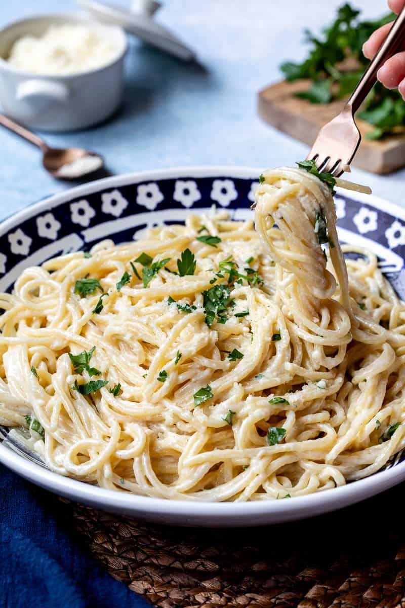
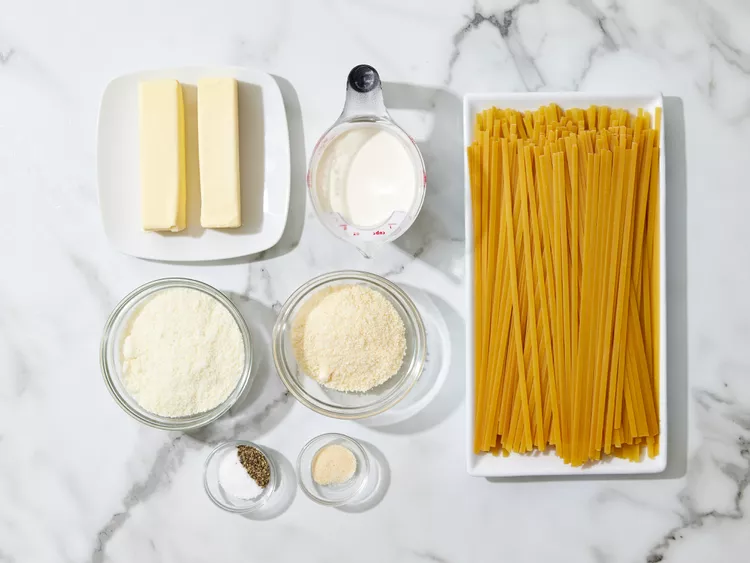
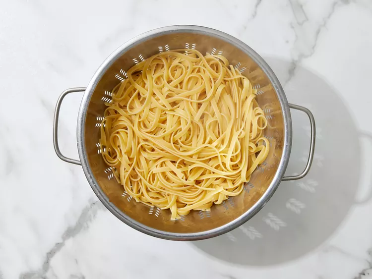
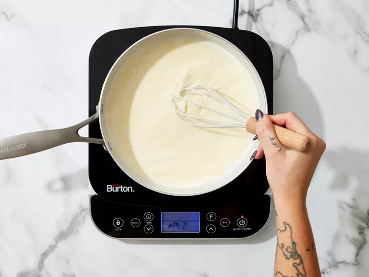
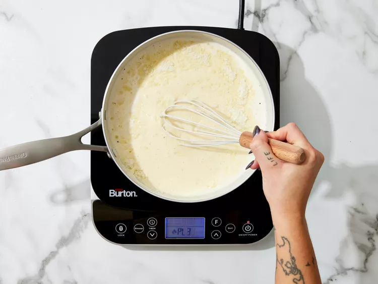
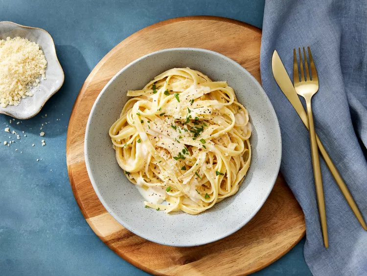

Pasta Alfredo

Ingredients Required
- Pasta
- Butter
- Cream
- Seasonings
- Cheese
Recipe
- Gather all ingredients.

- Bring a large pot of lightly salted water to a boil. Add fettuccine pasta and cook for 8 to 10 minutes or until al dente; drain.

- Melt butter into cream in a large saucepan over low heat; add salt, pepper, and garlic salt.

- Increase the heat to medium; stir in grated Romano and Parmesan cheese until melted and sauce has thickened.

- Add cooked pasta to sauce and toss until thoroughly coated; serve immediately.

Spinkle some more seasonings on top and Enjoy hot!
Back to Homepage